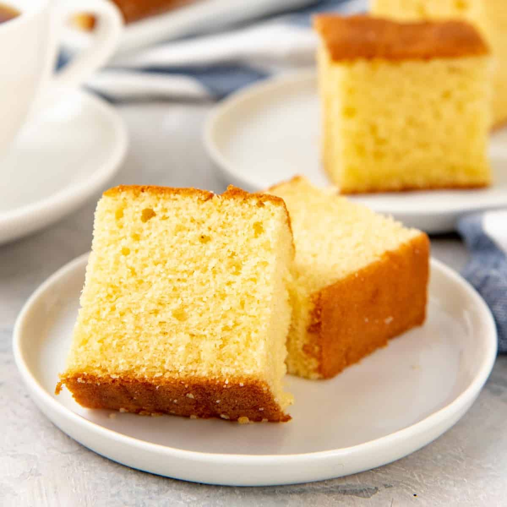

Butter Cake

Scrumptious buttery goodness
The best cake to go with tea, and quite literally everthing else. Recipe from rasamalaysia.
Ingredients
- Unsalted butter
- All purpose flour
- Sugar
- Eggs
- Yogurt or Milk
- Baking powder
- Vanilla extract
Steps
- Preheat the oven to 375°F (190°C).
- Lightly grease the pan (loaf pan, mini loaf pan, 8x8-inch or 9x9-inch square pan, round pan) with some butter. Mix the flour and the baking powder together and sieve. Add in the salt and mix well. Set aside.
- Use an electronic hand mixer or stand mixer to beat the butter and sugar until well combined or pale yellow in color, about 3 minutes.
- Add in the first egg. Beat well after each addition of egg until creamy, about 1 to 2 minutes after adding each egg.
- Scrape down the sides for even mixing. Add in the vanilla extract and mix well. Fold in the flour and mix well. Add in the plain yogurt or whole milk.
- Pour the batter into the greased baking pan. Shake it lightly to distribute the cake batter evenly. Bake until golden brown and cooked, about 40 - 50 minutes. To prevent the top of the cake from over browning, cover the top of the baking pan with a sheet of aluminum foil once the cake top is set. Use a cake tester to test doneness.
- Remove it from the oven and let cool on the wire rack for 5 minutes. Cut into pieces and serve warm.